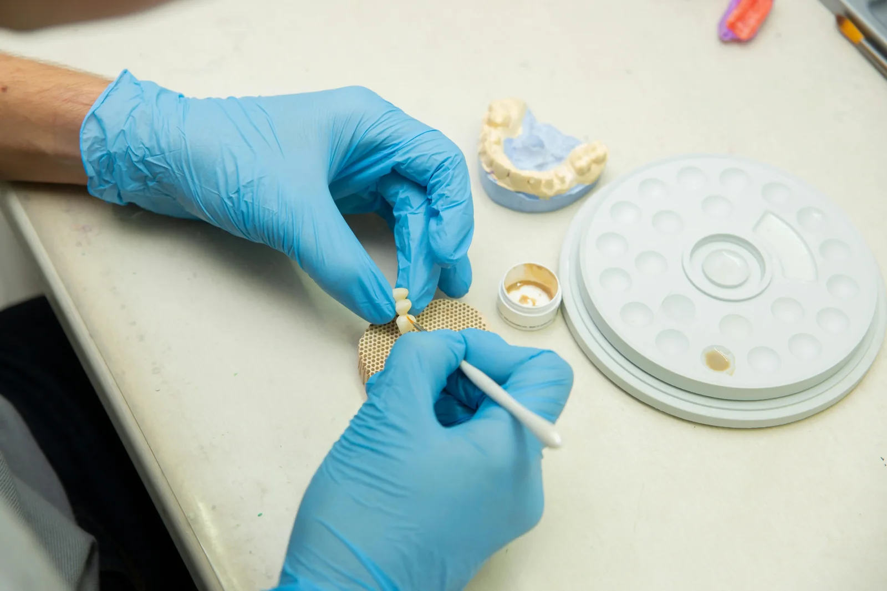

Usługi
Korony i mosty
Naturalna estetyka i precyzyjne dopasowanie z naciskiem na stabilną pracę w codziennej praktyce klinicznej.

Kluczowe elementy
- Kolor i kształtNaturalna estetyka w świetle dziennym.
- KontaktyPunkty kontaktu i okluzja – bez „niespodzianek”.
- DopasowanieDokładność na marginesach i stabilność pracy.
Współpraca B2B
Przy współpracy cyklicznej działamy w stałym modelu: brief, realizacja, odbiór.
Szczegóły
Informacje dla gabinetów
Co przesłać do wyceny
Standard kontroli jakości
Komunikacja techniczna
FAQ
Najczęstsze pytania
Jakie informacje są potrzebne do wyceny korony lub mostu?
Liczba punktów, odcinek, materiał (e.max/cyrkon), kolor, termin oraz sposób przekazania (STL lub wycisk). Zdjęcia referencyjne mile widziane.
Czy przyjmujecie skany wewnątrzustne (STL)?
Tak. Pracujemy w modelu cyfrowym i analogowym. Przy STL dołącz informacje o zwarciu oraz krótki brief estetyczny.
Co najbardziej wpływa na przewidywalne dopasowanie?
Kompletny brief: materiał, oczekiwana morfologia, wskazówki estetyczne oraz pełne dane (zwarcie, granice preparacji, referencje).
Jak wygląda kontrola kontaktów i okluzji?
Weryfikujemy kontakty proksymalne i okluzję oraz dopasowanie na marginesach. Gdy czegoś brakuje — wracamy z konkretnymi pytaniami przed finalizacją.
Czy można ustalić stały standard dla całego gabinetu?
Tak. Przy stałej współpracy ustalamy preferencje (materiały, morfologia, opis kolorystyki), żeby kolejne realizacje były spójne i powtarzalne.
Jak zgłosić korektę lub poprawkę?
Najlepiej opisać problem i dołączyć zdjęcia. Szybko ustalimy, czy korekta jest możliwa i jaki będzie najkrótszy termin.